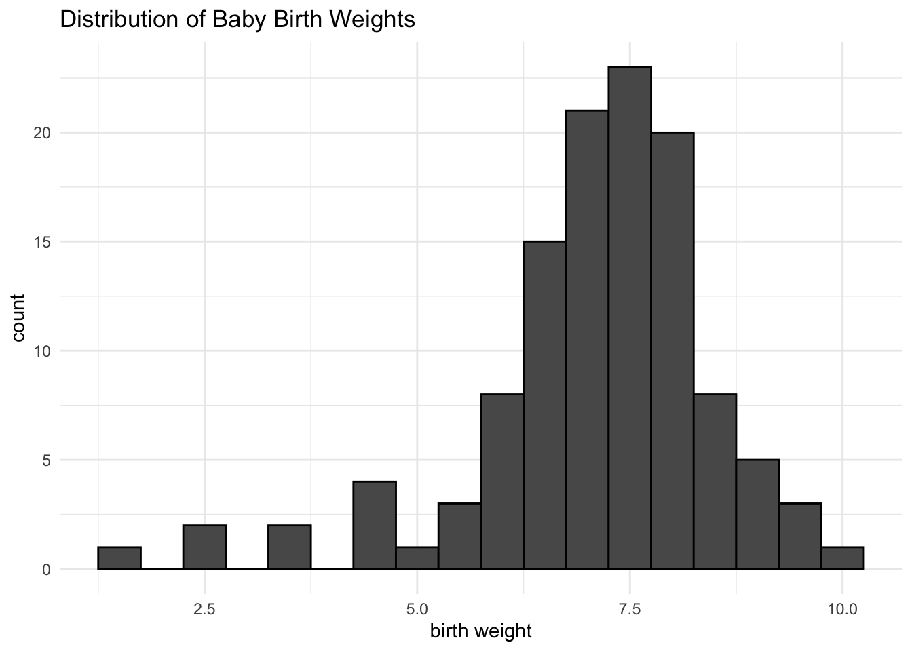
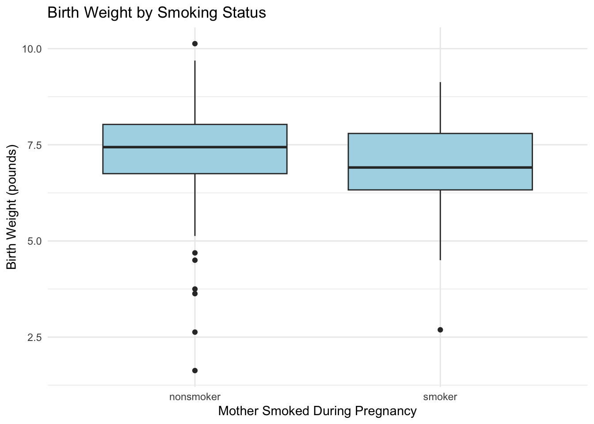
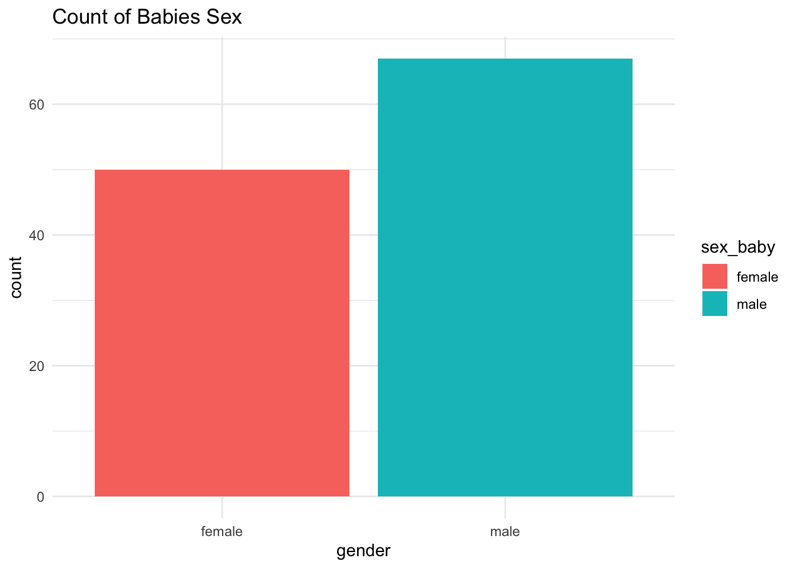
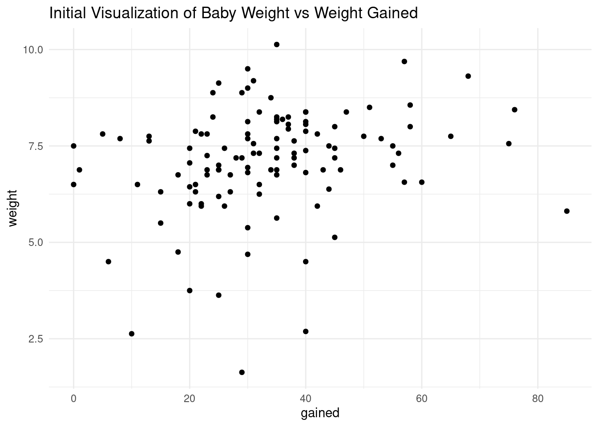
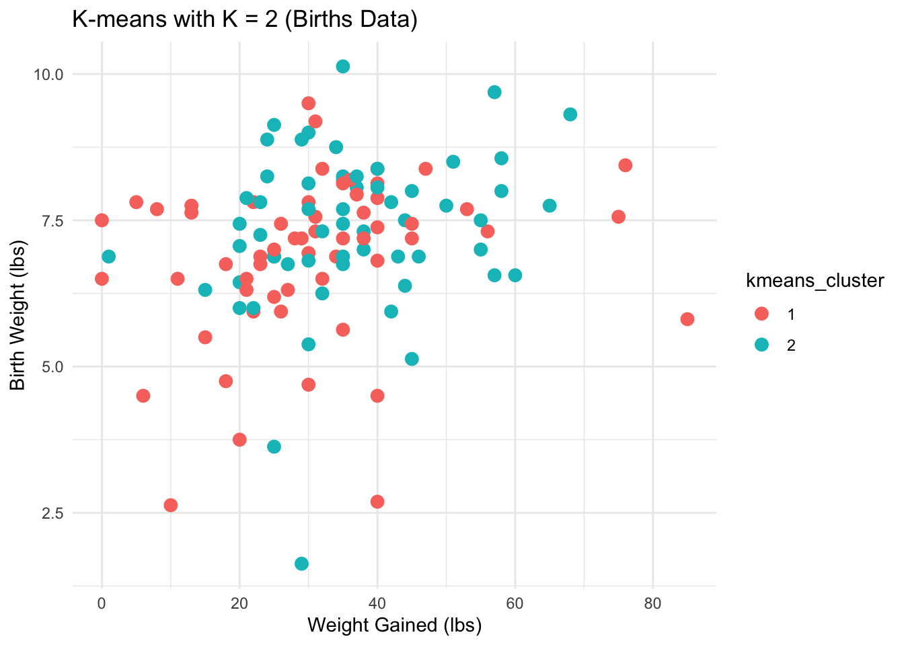
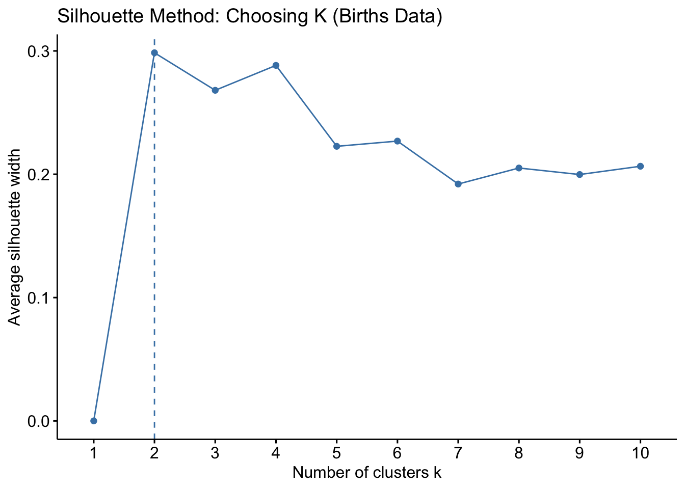

Show Code
library(tidyverse)
library(tidymodels)
library(cluster)
library(readxl)
library(readr)
library(purrr)
library(dplyr)
library(ggplot2)
library(gridExtra)
library(gmodels)
library(factoextra)Attached is my final project from my STAT 244-Statistical Computation course at Mount Holyoke College.
This project investigates the factors that influence a newborn’s weight using a dataset that includes information on parental age, smoking status, baby sex, and whether the birth was premature. My initial goal was to build a predictive model for infant birth weight using multiple linear regression and cross-validation. I also came to apply unsupervised learning (K-means clustering) to uncover further patterns in the data. The goal is to explore relationships between these predictors and birth weight, using visualizations and statistical analysis in R.
f_age m_age weeks premature visits gained weight sex_baby smoke
1 31 30 39 full term 13 1 6.88 male smoker
2 34 36 39 full term 5 35 7.69 male nonsmoker
3 36 35 40 full term 12 29 8.88 male nonsmoker
4 41 40 40 full term 13 30 9.00 female nonsmoker
5 37 28 40 full term 12 35 8.25 male smoker
6 35 35 28 premie 6 29 1.63 female nonsmokerThe dataset was accessed from the OpenIntro births dataset, most recently accessed on 4/28/2025 at 2:15 pm. It is a random sample of 150 births in North Carolina from 2004, which includes demographic and health-related information collected around childbirth. There are 50 observations where the mother was a smoker and another 100 observations where the mother was not. Key variables included: infant birth weight (in pounds), maternal and paternal ages, maternal weight gain during pregnancy, smoking status during pregnancy, prematurity status of the birth, and sex of the baby. I was not concerned about ethical considerations, as it was state-collected and publicly available data that was collected without a commercial, political, or private solicitation motive. With that in check, I decided to move forward with data cleaning.

The data is fairly normally distributed with a slight left skew

We can see that right off the bat, babies born to smoking mothers tend to weigh less than those born to nonsmoking mothers. We do see nonsmoker group has a multiple low outliers and the smoker group also has one low outlier.
Although normally outliers may be removed, I am not rushing to do so as preemie babies are usually underweight, and premature status is a variable of interest. I feel as though those points can be elaborated, and deleting them will remove important story telling portions.

Although it is not a perfectly even distribution of male and female babies, the split is fairly even and thus not an area of concern
To isolate the power of each predictor we will need a “full” model and one with more selective variables to see impacts. M1 will be full and M2 is the more selective variables of interest
Model 1 : weight ~ smoke + f_age + m_age + gained + sex_baby + premature
Model 2: weight ~ smoke+ m_age+gained+premature
#For Reproducibility
set.seed(244)
# Define linear model specification
lm_spec <- linear_reg() %>%
set_engine("lm")
# Perform 10-fold cross-validation using the births_clean data
births_model1_cv <- lm_spec %>%
# fit_resamples() function is for fitting on folds
fit_resamples(
# Specify the relationship (Full model)
weight ~ smoke + f_age + m_age + gained + sex_baby +premature,
# vfold_cv makes CV folds randomly from births_clean data set
resamples = vfold_cv(births_clean, v = 10),
# Specify the error metrics (MAE, square root MSE, R^2)
metrics = metric_set(mae, rmse, rsq)
)
# Collect the average performance metrics across folds
births_model1_cv %>% collect_metrics()# A tibble: 3 × 6
.metric .estimator mean n std_err .config
<chr> <chr> <dbl> <int> <dbl> <chr>
1 mae standard 0.892 10 0.0961 Preprocessor1_Model1
2 rmse standard 1.12 10 0.123 Preprocessor1_Model1
3 rsq standard 0.322 10 0.0962 Preprocessor1_Model1#I took this code from Lab 7 Intro to CV
#For Reproducibility
set.seed(244)
# Define linear model specification
lm_spec <- linear_reg() %>%
set_engine("lm")
# Perform 10-fold cross-validation using the births_clean data
births_model2_cv <- lm_spec %>%
# fit_resamples() function is for fitting on folds
fit_resamples(
# Specify the relationship
weight ~ smoke+ m_age+gained+premature,
# vfold_cv makes CV folds randomly from births_clean data set
resamples = vfold_cv(births_clean, v = 10),
# Specify the error metrics (MAE, square root MSE, R^2)
metrics = metric_set(mae, rmse, rsq)
)
# Collect the average performance metrics across folds
births_model2_cv %>% collect_metrics()# A tibble: 3 × 6
.metric .estimator mean n std_err .config
<chr> <chr> <dbl> <int> <dbl> <chr>
1 mae standard 0.867 10 0.0998 Preprocessor1_Model1
2 rmse standard 1.08 10 0.126 Preprocessor1_Model1
3 rsq standard 0.336 10 0.102 Preprocessor1_Model1# A tibble: 3 × 6
.metric .estimator mean n std_err .config
<chr> <chr> <dbl> <int> <dbl> <chr>
1 mae standard 0.909 5 0.0784 Preprocessor1_Model1
2 rmse standard 1.18 5 0.106 Preprocessor1_Model1
3 rsq standard 0.328 5 0.125 Preprocessor1_Model1# A tibble: 3 × 6
.metric .estimator mean n std_err .config
<chr> <chr> <dbl> <int> <dbl> <chr>
1 mae standard 0.875 5 0.0938 Preprocessor1_Model1
2 rmse standard 1.13 5 0.126 Preprocessor1_Model1
3 rsq standard 0.415 5 0.116 Preprocessor1_Model1#I removed the rsq because when i included it, it ran me like an endlesss loop
births_model1_loocv <- lm_spec %>%
fit_resamples(
weight ~ smoke + f_age + m_age + gained + sex_baby+premature,
resamples = vfold_cv(births_clean, v = nrow(births_clean)),
metrics = metric_set(mae, rmse)
)
births_model1_loocv %>% collect_metrics()# A tibble: 2 × 6
.metric .estimator mean n std_err .config
<chr> <chr> <dbl> <int> <dbl> <chr>
1 mae standard 0.869 117 0.0679 Preprocessor1_Model1
2 rmse standard 0.869 117 0.0679 Preprocessor1_Model1#I removed the rsq because when i included it, it ran me like an endlesss loop
births_model1_loocv <- lm_spec %>%
fit_resamples(
weight ~ smoke + f_age + m_age + gained + sex_baby+premature,
resamples = vfold_cv(births_clean, v = nrow(births_clean)),
metrics = metric_set(mae, rmse)
)
births_model1_loocv %>% collect_metrics()# A tibble: 2 × 6
.metric .estimator mean n std_err .config
<chr> <chr> <dbl> <int> <dbl> <chr>
1 mae standard 0.869 117 0.0679 Preprocessor1_Model1
2 rmse standard 0.869 117 0.0679 Preprocessor1_Model1#I removed the rsq because when i included it, it ran me like an endlesss loop
births_model2_loocv <- lm_spec %>%
fit_resamples(
weight ~ smoke+ m_age+gained+premature,
resamples = vfold_cv(births_clean, v = nrow(births_clean)),
metrics = metric_set(mae, rmse)
)
births_model2_loocv %>% collect_metrics()# A tibble: 2 × 6
.metric .estimator mean n std_err .config
<chr> <chr> <dbl> <int> <dbl> <chr>
1 mae standard 0.852 117 0.0668 Preprocessor1_Model1
2 rmse standard 0.852 117 0.0668 Preprocessor1_Model1Model 2 achieved lower MAE and errors across all stages, indicating a better fit to the training data. However, its 10-fold CV MAE was only marginally better than Model 1, with slightly lower standard error. Despite the slight risk of overfitting, Model 2 was chosen due to its stronger explanatory capacity and meaningful inclusion of health-related features. This reinforces the benefit of including additional predictors such as maternal age, weight gain, and premature status in improving model accuracy.
I thought K-means would be an interesting to see what the clusters that are formed are and what variables are driving predictive power
K-means is an unsupervised learning algorithm that partitions data into K distinct clusters. The algorithm works by minimizing the the distance between clusters by their sum of squares. The most common way to implement it is by centroids which is the total distance between each point and the center of its assigned cluster.
#This code was adapted from K-means Lab 11
births_reduced <- births_clean %>%
filter(!is.na(weight), !is.na(m_age), !is.na(f_age), !is.na(gained)) %>%
select(weight, m_age, f_age, gained)
ggplot(births_reduced, aes(x = gained, y = weight)) +
geom_point() +
labs(title = "Initial Visualization of Baby Weight vs Weight Gained") +
theme_minimal()
set.seed(244)
# Run the K-means algorithm
kmeans_births <- kmeans(scale(births_reduced), centers = 2)
births_reduced %>%
mutate(kmeans_cluster = as.factor(kmeans_births$cluster)) %>%
ggplot(aes(x = gained, y = weight, color = kmeans_cluster)) +
geom_point(size = 3) +
theme(legend.position = "none") +
labs(title = "K-means with K = 2 (Births Data)",
x = "Weight Gained (lbs)",
y = "Birth Weight (lbs)") +
theme_minimal()
A PCA-based cluster plot showed interesting separation between the clusters. Cluster 1 (Red) generally included mothers with lower weight gain and lower infant birth weights. Cluster 2 (Blue) grouped pregnancies with higher maternal weight gain and heavier babies. There’s some overlap in the middle (to be expected with real health data), but overall I thought K-means found two broad groups. So after everything, based on the clustering, I concluded that higher maternal weight gain tends to be associated with higher infant birth weight.

I used the silhouette method to visualize the ideal number of k clusters. This method evaluates how well each point fits within its assigned cluster compared to other clusters. The point that was highest at K=2, which indicates that two clusters provide the most meaningful separation in the data. Larger values of K did not significantly improve the structure, and sometimes even lowered cohesion.
The modeling results show that birth weight is influenced by a combination of maternal behavior (smoking), parental demographics (age), and pregnancy-related variables (weight gain, premature birth). While the simplest model generalizes slightly better, the extended model offers more insights and maintains competitive error metrics.
Clustering analysis revealed that maternal and birth characteristics naturally fall into two groups, primarily differentiated by health-related factors like weight gain and birth weight. The findings emphasize the value of integrating both supervised and unsupervised learning to interpret real-world data more holistically.